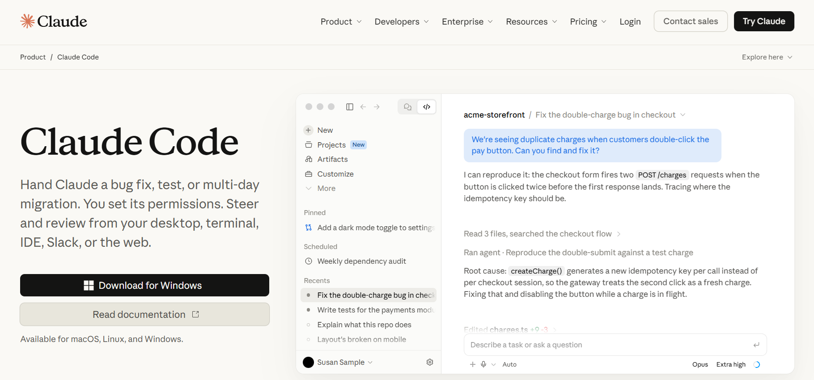

Fundamentos de IA para Criar Software
Da pergunta pioneira de Alan Turing à criação de produtos em linguagem natural.
A Pergunta Histórica
"Máquinas podem pensar?"
Em 1950, Alan Turing propôs abandonar debates filosóficos insolúveis sobre consciência e focar no comportamento observável com o Jogo da Imitação.
Do Jogo da Imitação ao Aprendizado
O Teste de Turing
Avaliação às cegas por mensagens escritas entre interrogador, humano e máquina.
A Máquina-Criança
Um mecanismo inicial simples educado progressivamente pela experiência.
A Grande Virada
Aprender com exemplos sem programação rígida de cada passo.
O Que é Machine Learning?
"O campo de estudos que dá aos computadores a habilidade de aprender sem serem explicitamente programados para isso."
— Arthur Samuel (1959)
Inteligência Artificial vs. Machine Learning
Inteligência Artificial (IA)
Conceito guarda-chuva para qualquer tarefa executada autonomamente por um computador, seja via regras pré-codificadas ou modelos.
"Se X, faça Y."
Machine Learning (ML)
Subcampo probabilístico onde o sistema analisa dados para inferir padrões estatísticos e realizar tarefas sem regras fixas.
"Se X tiver a maior probabilidade do conjunto, faça Y."
Programação Tradicional vs. Machine Learning
Antes: O Humano Escrevia a Regra
Para cada cenário novo, o programador tinha de prever e codificar a exceção.
Agora: Os Dados Revelam a Regra
Você fornece os dados de entrada e exemplos do resultado desejado. O computador descobre o modelo.
Machine Learning no Dia a Dia
Classificador de Spam
A sua caixa de e-mail aprende com as mensagens que você marca como "importante" ou "spam". Ela detecta termos e remetentes semelhantes automaticamente.
iFood: "A Regra do Gin"
Narrado no livro O Cientista e o Executivo: compras de garrafas caras de gin em restaurantes na madrugada tinham altíssima correlação com cartões clonados.
Modelos Discriminativos vs. Modelos Generativos
Modelos Discriminativos
Calculam a fronteira de decisão entre classes conhecidas. Atuam como auditores e classificadores.
"Isto é um cão ou um gato?"
Modelos Generativos
Aprendem a distribuição geral dos dados para produzir textos, códigos e imagens inéditas do zero.
"Desenhe um gato inédito para mim."
Categorias de Aprendizado de Máquina
Supervisionado vs. Não-Supervisionado (Clustering)
1. Aprendizado Supervisionado (Com Rótulos)
2. Aprendizado Não-Supervisionado (Clustering)
Reforço, Semi e Auto-Supervisionado
Por Reforço
Tentativa e erro guiada por pontos de recompensa e penalidade.
Semi-Supervisionado
Poucos dados rotulados combinados com um grande volume de dados brutos.
Auto-Supervisionado
O modelo oculta partes do texto e aprende prevendo a próxima palavra.
O Que São Large Language Models (LLMs)?
Tokens em vez de Sentimentos
Computadores convertem textos em vetores matemáticos (tokens) e calculam pesos estatísticos.
Cálculo da Próxima Palavra
Como os Programadores Trabalham
Antes: O Desespero da Sintaxe
Horas preso no StackOverflow caçando erros de digitação e ponto e vírgula.
Hoje: Arquiteto com IA (Vibecoding)
Comunicação em linguagem natural, revisão crítica e orquestração da arquitetura.
A Lógica por Trás da Conversa
Pensamento Estruturado
Decompor problemas em etapas claras gera resultados dez vezes mais precisos.
Condições e Fluxos
Compreender regras de negócio separa um pedido vago de um software funcional.
Auditoria Crítica
Discernimento lógico permite validar e corrigir respostas da IA.
Oficina Prática: Vibecoding
Vamos construir e publicar um dashboard analítico interativo conversando com a IA.
Atue como um engenheiro de software especialista em Python e Streamlit. Crie um aplicativo interativo de dashboard para análise de dados do DATASUS (nascimentos SINASC de 2010 a 2024). Inclua filtros por tema, período e município, além de cards com métricas principais (nascidos vivos, cesáreas, baixo peso) e gráficos analíticos.
Escaneie esse QR Code para Acessar as Especificações do Projeto

Aponte a câmera do seu celular para abrir o repositório com os prompts completos da oficina.
Como o Site vai Ficar (Painel de Dados do SUS)

Entre no Claude e Insira o Prompt

Entre no GitHub, Faça seu Cadastro

Acessar o Repositório no GitHub e Clicar em Code
1. Acesse o repositório
Entre em dashdatasus pelo navegador.
2. Clique em "Code"
Abra as opções de clone ou download.

Ativar os Robôs: Comece Clicando em Settings
1. Menu More
No topo do repositório, abra o menu de opções.
2. Clique em "Settings"
Acesse as configurações do projeto.

Configurar Automações: Clicar em Actions
1. Menu Lateral
Localize a seção Code, planning, and automation.
2. Clique em "Actions"
Configuração dos robôs de coleta.

Acessar o Submenu General de Actions
1. Expanda Actions
No menu lateral esquerdo sob Actions.
2. Clique em "General"
Abra as permissões globais de execução.

Workflow Permissions: Selecionar Read and Write Permissions
1. Workflow permissions
Marque Read and write permissions.
2. Clique em "Save"
Salve para autorizar a gravação de dados.

Carregando Workflows: Acessar a Aba Actions
1. Abra a aba Actions
No menu superior do repositório, clique em Actions para visualizar os robôs configurados.

Carregando Workflows: Selecionar "Coleta DATASUS"
2. Escolha o Workflow
No menu lateral esquerdo sob Workflows, clique em Coleta DATASUS.

Selecionando as Bases: Clicar em "Run workflow"
1. Inicie a execução
Clique no botão verde Run workflow à direita para abrir as opções de disparo manual.

Selecionando as Bases: Abrir Menu de Sistemas
2. Escolha o parâmetro
Em Base a coletar, abra a caixa de seleção para escolher quais dados do DATASUS serão baixados.

Selecionando as Bases Disponíveis do DATASUS
Coleta Completa ou Pontual
Selecione todas ou uma base específica: sinasc, sim, sih, sinan, cnes, sia ou pni.
Confirme em "Run workflow"
O robô processa e salva os arquivos otimizados no repositório.

Acesse o Streamlit e Faça Login com o GitHub

Publicando o Site: Deploy do Projeto no Streamlit
1. Selecione o Repositório
No painel do Streamlit Cloud, clique em Create app e escolha o repositório dashdatasus.
2. Clique em "Deploy"
O servidor instala automaticamente as dependências e coloca o dashboard no ar gratuitamente.
3. Site Online!
Seu aplicativo ganha um link público compartilhável e atualiza sozinho com os robôs.

Irving Merath
"Conecte-se comigo e vamos construir o próximo projeto juntos!"